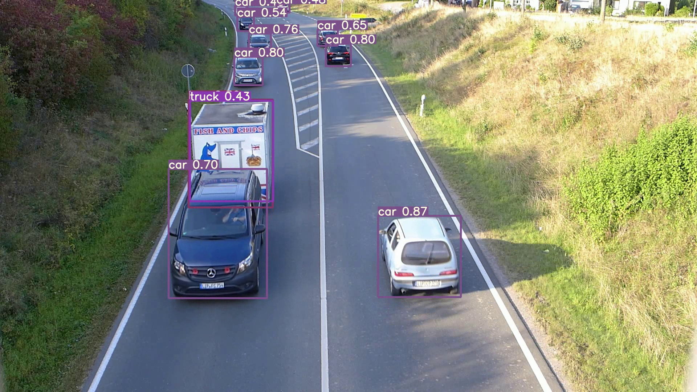

class: center, middle count: false # ML-Webinar-01 ## Conventional Machine Learning Prepared By: Vishal Rangras --- # Introduction ### What is this Webinar about? * Quick introduction to conventional machine learning * Dataset exploration, visualization and inference * Classification and Regression tasks in context * Path and resources to self-study machine learning --- # Libraries and Frameworks * **Anaconda and Jupyter notebook** - Python, Conda Environment, Notebook Cells. * **Numpy, Matplotlib, Pandas** - numerical operations, plotting/visualization, columnar data operations * **Scikit-Learn** - Ready-to-use Machine Learning Algorithms * **Tensorflow, Keras, PyTorch** - Deep Learning Frameworks * **Ray, Ray-RLLib** - CPU and GPY Cluster scaling of process, Deep Reinforcement Learning framework * **OpenCV** - Image Processing and Computer Vision --- # Resources #### YouTube Channels * **StatQuest** - For Statistics and algorithmic explanation of ML * **3Blue1Brown** - Essence of linear algebra, Neural Network playlist - Good to visualize math * **DeepLizard** - For Deep Learning and Deep Reinforcement Learning * **DeepMind** - Search for David Silver lectures on Reinforcement Learning #### Free Courses/Sites * **Coursera and Udacity** - Lots of free courses from basics to advance level * **Fast.ai** - Practical Deep Learning * **MIT OCW** - Open Courseware from MIT for Graduate Level Courses * **OpenAI and Anyscale Academy** - Lots of resources and tutorials in Deep RL --- # Machine Learning - 1 **Conventional Programming:** * The programmer understands the business logic and code it in programming language. **Machine Learning:** * Useful when it is **hard to code business logic** manually * The idea is to **code learning algorithms** which can **learn** the business logic from **data** * Useful only with good amount of **useful (correct) data** * Data and models (algorithms), both are equally important to understand * **Statistics** is huge part of ML - Khan Academy --- # Machine Learning - 2 #### Basic Categorization * Supervised Learning * Unsupervises Learning * Semi-Supervised Learning #### Tasks in Supervised Learning * **Classification** - Predict discrete value output / Predict from fixed number of categories * **Regression** - Predict continuous value output --- # Classification - Example Traffic Detection and Tracking <style> img { align: center; width: 700px; height: 450px; object-fit: contain; display: block; margin-left: auto; margin-right: auto; } </style>  --- # Classification - Examples 1. Old vs. New Drill Bit Classification 2. Spam vs. No Spam 3. Fraud vs. No Fraud 4. Claim approval vs. rejection 5. Document/Image/Content classification and tagging 6. Revenue vs. No Revenue - Online Shopping, Bank Term Plan, Insurance, Sales --- ---